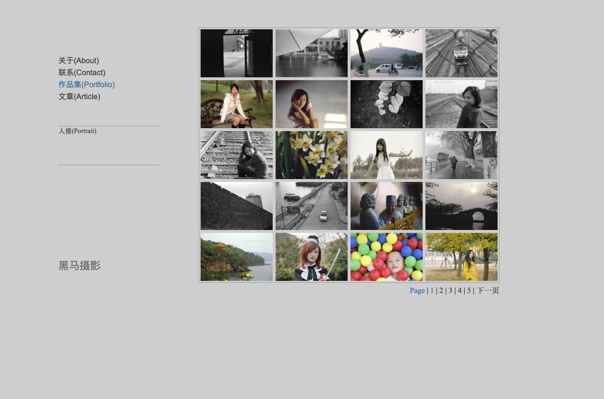
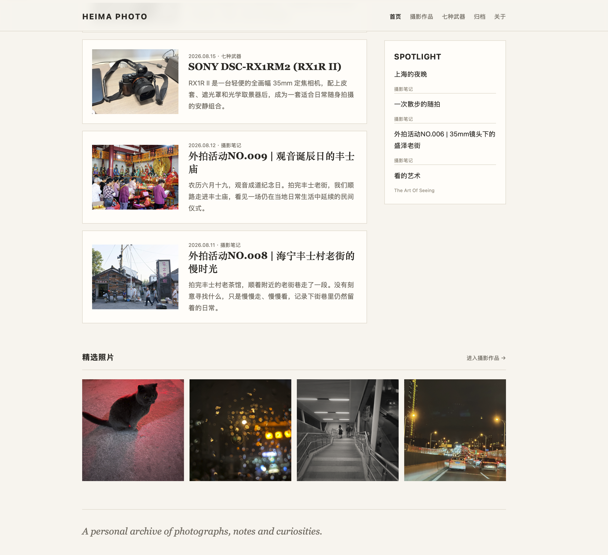

这个网站最早应该是在2013年建立的（根据本站的 关于 页面:D），之前试过很多VPS主机，最后懒得折腾，关键是不想氪金，后来决定用 Github 的免费 Pages 服务建网站。
当时我给自己一条原则，就是只用静态网页HTML，不用asp, php，mysql等动态结构。所以最初的网站是我一点一点写出来的，先自行设计 UI，包括背景颜色的选取，我记得是受到当时”色影无忌文字论坛“（现已无法打开）的影响，使用了淡灰色，当然只是接近并不完全相同。
当时我挺喜欢这种小格子，见下面第一张截图，排满后挺好看，就算现在新 UI 的 七种武器 页面也仍然采用了类似的结构。这样看的话，是否说明一个人的审美有时候是根深蒂固的。
每个人的生活侧重是会发生变化的。就象后来我逐渐失去了维护网站的兴趣，就象上次谁说的色影无忌的老板现在喜欢研究红酒与AI，哪有时间管摄影？
从 归档 页面可以看出，到2017年5月为止，后面基本很少更新。但谁也无法预料，今年2026年6月我又回来了。
目前的新 UI 全部由 ChatGPT(Codex) 完成。其中设计部分主要由 ChatGPT 聊天体完成，而写代码基本由 Codex 完成，一个作为设计和监工，一个作为牛马执行，我觉得两者配合的很好。
目前的文章与照片发布很轻松，完全由 ChatGPT 自动完成，我只要写好 md 模板并把照片放到指定位置即可。为了以防万一，如果以后 AI 不能用呢，所以也让 AI 写了手动发布的 py 脚本文件使用说明。
同样，这篇文章也是 ChatGPT 帮我自动发布的。


